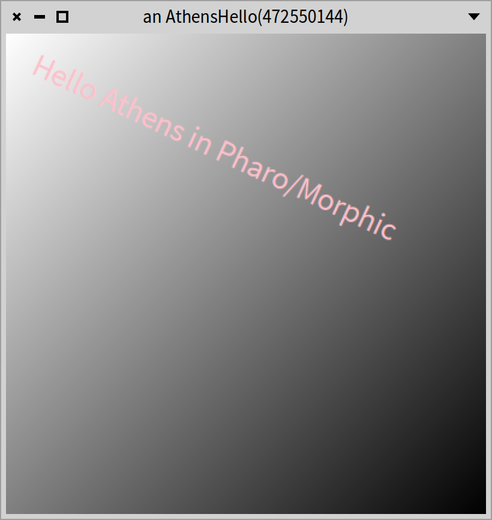
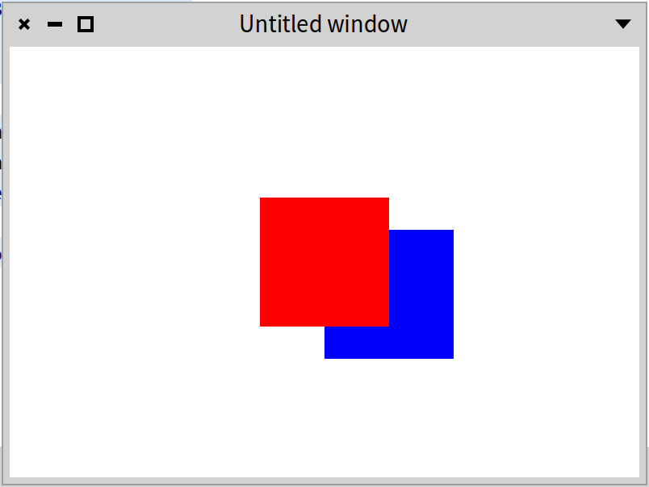

16 Using Athens and Roassal in Spec
A part of this chapter was originally written by Renaud de Villemeur. We thank him for his contribution. It shows how you can integrate vector graphic drawing within Spec components. This chapter shows how you can use Athens (a canvas using Cairo as backend) to draw using a low-level API on a canvas inside a Spec presenter. It then shows how you can use Roassal (a visualization engine) within a Spec presenter. Finally we show how you can integrate into a Spec component a Morph that draws into a Athens canvas.
16.1 Introduction
There are two different computer graphics: vector and raster graphics. Raster graphics represent images as a collection of pixels. Vector graphics uses geometric primitives such as points, lines, curves, or polygons to represent images. These primitives are created using mathematical equations.
Both types of computer graphics have advantages and disadvantages. The advantages of vector graphics over raster are:
- smaller size,
- ability to zoom indefinitely,
- moving, scaling, filling, and rotating do not degrade the quality of an image.
Ultimately, pictures on a computer are displayed on a screen with a specific display dimension. However, while raster graphics doesn't scale very well when the resolution differs too much from the picture resolution, vector graphics are rasterized to fit the display they will appear on. Rasterization is taking an image described in a vector graphics format and transforming it into a set of pixels for output on a screen.
Morphic is using a raster approach. It converts the canvas contents into a pixel based structure (the class Form). Most graphics in Pharo are raster graphics: Form the low-level abstraction is used by Morphic. Pharo, however, offers a vector graphics alternative. For this, it uses and exposes Cairo to the user.
Two APIs are available:
- the older one, called Athens, is protecting more the developers from possible mistakes.
- Alexandrie is a new and more low-level API. It has been more aggressively optimized. It is the foundation for Bloc the replacement of Morphic.
When you integrate Athens with Spec, you'll use its rendering engine to create your picture. It is transformed into a Form and displayed on the screen.
16.2 Direct integration of Athens with Spec
We first create a presenter named AthensExamplePresenter. This is the presenter that will support the actual rendering using Athens.
SpPresenter << #AthensExamplePresenter
slots: { #athensPresenter };
package: 'CodeOfSpec20Book'We define a simple layout to place the athensPresenter.
AthensExamplePresenter >> defaultLayout
^ SpBoxLayout newTopToBottom
add: athensPresenter;
yourselfThis presenter creates and configures an SpAthensPresenter instance as follows:
AthensExamplePresenter >> initializePresenters
athensPresenter := self instantiate: SpAthensPresenter.
athensPresenter surfaceExtent: 600@400.
athensPresenter drawBlock: [ :canvas | self render: canvas ]It configures the AthensPresenter to draw with the render: message.
The render: method is a typical sequence of instructions to configure the canvas.
AthensExamplePresenter >> render: canvas
| surface font |
surface := canvas surface.
font := LogicalFont familyName: 'Source Sans Pro' pointSize: 10.
surface clear.
canvas
setPaint: ((LinearGradientPaint from: 0@0 to: surface extent)
colorRamp: { 0 -> Color white. 1 -> Color black }).
canvas drawShape: (0@0 extent: surface extent).
canvas setFont: font.
canvas setPaint: Color pink.
canvas
pathTransform translateX: 20 Y: 20 + (font getPreciseAscent);
scaleBy: 2;
rotateByDegrees: 25.
canvas drawString: 'Hello Athens in Pharo/Morphic'Executing AthensExamplePresenter new open produces Figure 16.1.
SpAthensPresenter.
This example is simple because we did not cover the rendering that may have to be invalidated if something changes, but it shows the key aspect of the architecture. You can do the same using the Alexandrie new canvas based on Cairo. Notice that here we directly draw on the canvas without manipulating Morphic objects. This is what we will do in a following section.
16.3 Roassal Spec integration
In this section, we describe how you can define a Spec presenter that lets you draw Roassal visualisations.
Imagine that you want to draw using Roassal some shapes. Here we draw two boxes. But you can also draw paths and other graphical element.
| c blueBox redBox |
c := RSCanvas new.
blueBox := RSBox new
size: 80;
color: #blue.
redBox := RSBox new
size: 80;
color: #red.
c
add: blueBox;
add: redBox.
blueBox translateBy: 40 @ 20.
cUsing SpRoassalInspectorPresenter.
Building a Roassal supporting Spec presenter is as simple as creating an instance of SpRoassalInspectorPresenter and passing it the canvas on which we draw the Roassal visualization.

This is what the following expression is doing SpRoassalInspectorPresenter new canvas: c; open
Executing the following snippet should open a Spec window with a presenter inside as shown in Figure 16.2.
| c blueBox redBox |
c := RSCanvas new.
blueBox := RSBox new
size: 80;
color: #blue.
redBox := RSBox new
size: 80;
color: #red.
c
add: blueBox;
add: redBox.
blueBox translateBy: 40 @ 20.
SpRoassalInspectorPresenter new canvas: c; open16.4 SpRoassalPresenter
Spec proposes a presenter dedicated to Roassal visualizations.
Such a presenter is called SpRoassalPresenter and you can use it using the newRoassal message in an initializePresenter method.
Here is how the SpColorPicker uses it.
SpColorPicker >> defaultLayout
| sp sp2 |
sp := self newRoassal.
sp2 := self newPresenter.
sp2 layout: SpBoxLayout newTopToBottom.
sp canvas color: Color black translucent.
^ SpBoxLayout newTopToBottom
add: colorMap height: 150;
add: colorSlider height: 25;
add: alphaSlider height: 25;
add: colorCodePresenter expand: false;
add: sp2 height: 10;
add: sp height: 1;
add: paletteChooser;
spacing: 1;
yourself.The main API of SpRoassalPresenter are the method canvas and script as shown in the following test.
You can interact with a Roassal canvas normally and the result gets displayed in the Roassal presenter.
testBasic
| spec value window |
self isValid ifFalse: [ ^ self ].
spec := SpRoassalPresenter new.
window := spec asWindow open.
value := 0.
spec script: [ :view | view addShape: RSBox new. value := value + 1 ].
self assert: value equals: 1.
spec script: [ :view | view addShape: RSBox new. value := 0 ].
self assert: value equals: 0.
window close16.5 Hello world in Athens via Morphic objects
The Pharo development team is actively working to replace Morphic by Bloc a new graphical stack. Still we believe that the following approach is worth documenting. We show how we can define a Morph that draws inside a athens canvas and how such a morph can be rendered inside a Spec component.
We show how to use Athens directly integrated with Morphic. This is why we create a Morph subclass. The expression AthensHello new openInWindow will display the same contents as the one of Figure 16.1.
First, we define a class which inherits from Morph:
Morph << #AthensHello
slots: { #surface };
package: 'CodeOfSpec20Book'During the initialization phase, we create an Athens surface:
AthensHello >> initialize
super initialize.
self extent: self defaultExtent.
surface := AthensCairoSurface extent: self extentwhere defaultExtent is simply defined as
AthensHello >> defaultExtent
^ 400@400The drawOn: method, mandatory in Morph subclasses, asks Athens to render its drawing and it will then display it in a Morphic canvas as a Form (a bitmap picture).
AthensHello >> drawOn: aCanvas
self renderAthens.
surface displayOnMorphicCanvas: aCanvas at: bounds originOur actual Athens code is located in the renderAthens method, and the result is stored in the surface instance variable.
AthensHello >> renderAthens
| font |
font := LogicalFont familyName: 'Arial' pointSize: 10.
surface drawDuring: [ :canvas |
surface clear.
canvas setPaint: ((LinearGradientPaint from: 0@0 to: self extent) colorRamp: { 0 -> Color white. 1 -> Color black }).
canvas drawShape: (0@0 extent: self extent).
canvas setFont: font.
canvas setPaint: Color pink.
canvas pathTransform translateX: 20 Y: 20 + (font getPreciseAscent); scaleBy: 2; rotateByDegrees: 25.
canvas drawString: 'Hello Athens in Pharo/Morphic' ]Open the morph in a window with:
AthensHello new openInWindow16.6 Handling resizing
You can create the window and see a nice gradient with a greeting text. You will notice, however, that when resizing the window, the Athens content is not resized. To fix this, we need one extra method.
AthensHello >> extent: aPoint
| newExtent |
newExtent := aPoint rounded.
(bounds extent closeTo: newExtent) ifTrue: [ ^ self ].
bounds := bounds topLeft extent: newExtent.
surface := AthensCairoSurface extent: newExtent.
self layoutChanged.
self changedCongratulations, you have now created your first morphic window whose contents is rendered using Athens. Now we show how to integrate this morph object into a Spec presenter.
16.7 Using the morph with Spec
Now that we have a morph, we can use it in a presenter, instance of the class SpMorphPresenter, as follows.
SpPresenter << #AthensHelloPresenter
slots: { #morphPresenter };
package: 'CodeOfSpec20Book'We define a basic layout so that Spec knows where to place it.
AthensHelloPresenter >> defaultLayout
^ SpBoxLayout newTopToBottom
add: morphPresenter;
yourselfIn initializePresenters we wrap the morph in a SpMorphPresenter.
AthensHelloPresenter >> initializePresenters
morphPresenter := self instantiate: SpMorphPresenter.
morphPresenter morph: AthensHello newWhen we open the presenter it displays the morph:
AthensHelloPresenter new open16.8 Conclusion
This chapter illustrated clearly that Spec can take advantage of canvas-related operations such as those proposed by Athens or Roassal to open the door to specific visuals.